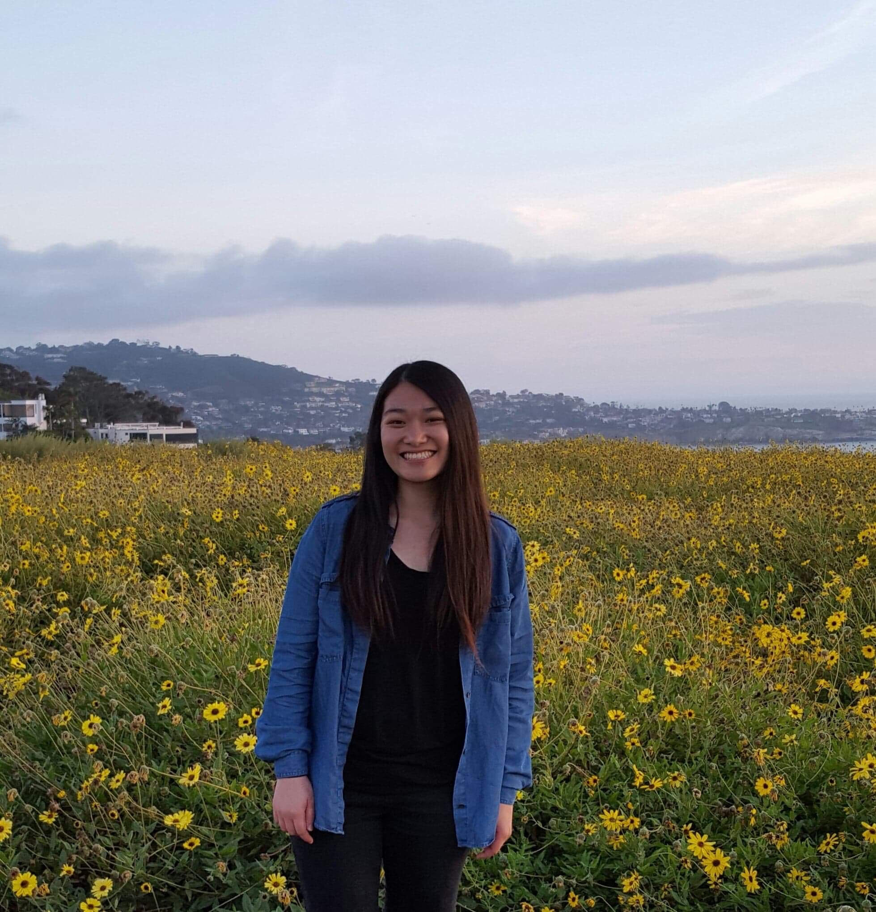

JIAYIN WU
About Me
JWu

JWu
Life Explorer | Constant Learner
Hello! ☺
My name is Jiayin Wu. I am a passionate person that is motivated by learning something
new every day. I am excited to try new things and leverage what I have learned in lectures and apply them to
the real world. I am in the process of finding my place in the vast fields of business and economics.
An ideal career would be one that allows for constant growth within an open and dynamic environment.
I am in the journey of self discovery and want to delve deeper into understanding and improving myself.
I find joy in the small and simple aspects of life. Someday, I wish to have the ability to help those in need
through volunteering and charity work on a consistent basis.
I am in the journey of self discovery and want to delve deeper into understanding and improving myself. I find joy in the small and simple aspects of life. Someday, I wish to have the ability to help those in need through volunteering and charity work on a consistent basis.